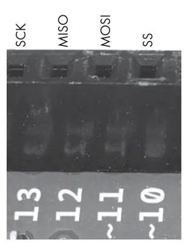
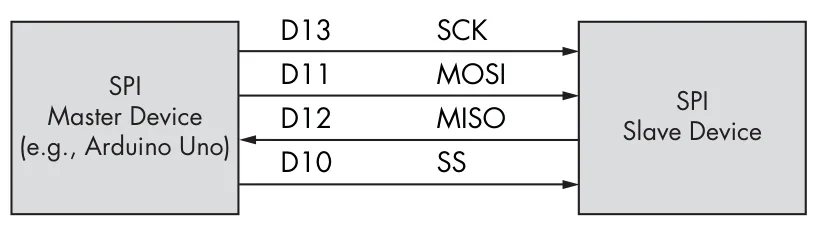
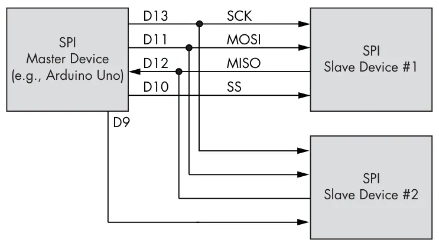

The SPI bus differs from the I2C bus in that it can be used to send data to and receive data from a device simultaneously and at different speeds, depending on the microcontroller used. Communication, however, is also master-slave: The Arduino acts as the master and determines which device (the slave) it will communicate with at one time.

Pin Connections
Each SPI device uses four pins to communicate with a master: MOSI (Master-Out, Slave-In), MISO (Master-In, Slave-Out), SCK (clock), and SS or CS (Slave Select or Chip Select). These SPI pins are connected to the Arduino as shown in Figure 17-8.
A typical single Arduino-to-SPI device connection is shown in Figure 17-9. Arduino pins D11 through D13 are reserved for SPI, but the SS pin can use any other digital pin (often D10 is used because it’s next to the SPI pins).

Implementing the SPI
Now let’s examine how to implement the SPI bus in a sketch. Before doing this, however, we’ll run through the functions used. First is the SPI library (included with the Arduino IDE software):
#include "SPI.h"Next, you need to choose a pin to be used for SS and set it as a digital output in void setup. Because we’re using only one SPI device in our example, we’ll use D10 and set it up HIGH first, because most SPI devices have an “active low” SS pin:
pinMode(10, OUTPUT);
digitalWrite(10, HIGH);Here is the function to activate the SPI bus:
SPI.begin();Finally, we need to tell the sketch which way to send and receive data. Some SPI devices require that their data be sent with the Most Significant Bit (MSB) first, and some want the MSB last. (Again, see “A Quick Course in Binary” on page 116 for more on MSB.) Therefore, in void setup we use the following function after SPI.begin:
SPI.setBitOrder( order );Here, order is either MSBFIRST or MSBLAST.
Sending Data to an SPI Device
To send data to an SPI device, we first set the SS pin to LOW, which tells the SPI device that the master (the Arduino) wants to communicate with it. Next, we send bytes of data to the device with the following line, as often as necessary—that is, you use this once for each byte you are sending:
SPI.transfer(byte);After you’ve finished communicating with the device, set the SS pin to HIGH to tell the device that the Arduino has finished communicating with it.
Each SPI device requires a separate SS pin. For example, if you had two SPI devices, the second SPI device’s SS pin could be D9 and connected to the Arduino as shown in Figure 17-10.

When communicating with the second slave device, you would use the D9 (instead of the D10) SS pin before and after communication.
Project 56 demonstrates using the SPI bus with a digital rheostat.